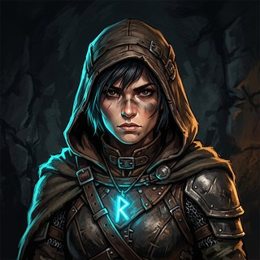

Ein Mini-Dungeon, gebaut mit KI-generierten Texturen.
Sammle 5 Runen im Verlies, weiche den Schatten aus und erreiche das leuchtende Portal. Alle Wand-, Boden- und Kistentexturen wurden prozedural kachelbar gemacht.